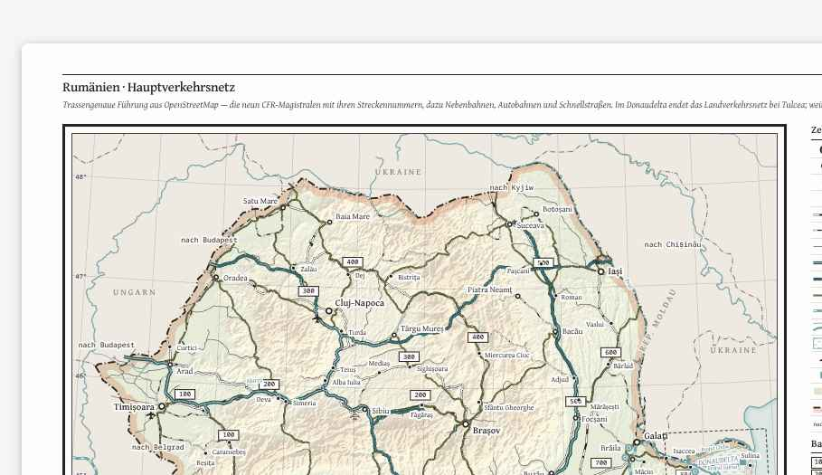
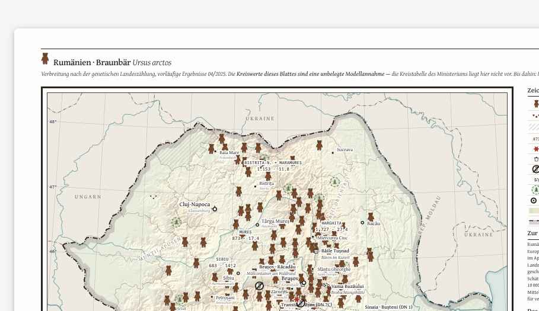

Kleiner Gruß aus der Küche
Wittstock/Dosse · 7. August 2026 · Jan Paki
Zwei Blätter sind in Arbeit, fertig ist keins. Hier ein Ausschnitt aus jedem — die Verkehrskarte, wie sie am Ende aussieht, die Bärenkarte mit ein paar erfundenen Zahlen, die nachher wieder rausfliegen.
RUMÄNIEN · HAUPTVERKEHRSNETZ

Ausschnitt, originalgetreu — Magistralen mit Streckennummern, Autobahnen, Donaudelta-Nebenkarte unten rechts.
↪ ganzes BlattBLATT 16 · RUMÄNIEN BRAUNBÄR

Ausschnitt aus der Streusignatur. Kreiswerte und echte Fundpunkte fehlen der Vorschau noch — das steht auf dem Blatt selbst schon so.
↪ ganzes BlattVORSCHAU-SPIELEREIEN · UNBELEGT, NUR ZUR DEKO
— Meistfotografierter Bär der Karte: Exemplar „Gheorghe“, Zoo-Anwohner bei Kronstadt, drei Lokalzeitungsartikel (unbelegt).
— Größte gezählte Rotte an einer Mülltonne: sechs Tiere, Poiana Brașov (unbelegt).
— Halsbandsender Y-19 meldet 9,4 km Wegstrecke pro Nacht, Mittelwert (unbelegt).